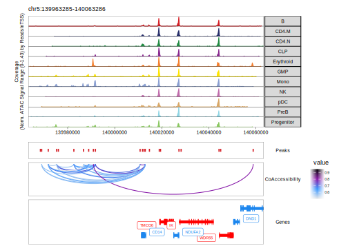

17.2 Co-accessibility with ArchR
Co-accessibility is a correlation in accessibility between two peaks across many single cells. Said another way, when Peak A is accessible in a single cell, Peak B is often also accessible. We illustrate this concept visually below, showing that Enhancer E3 is often co-accessible with Promoter P.

One thing to note about co-accessibility analysis is that it often identified cell type-specific peaks as being co-accessibile. This is because these peaks are often all accessible together within a single cell type and often all not accessible in all other cell types. This drives a strong correlation but does not necessarily mean that there is a regulatory relationship between these peaks.
To calculate co-accessibility in ArchR, we use the addCoAccessibility() function which stores peak co-accessibility information in the ArchRProject.
projHeme5 <- addCoAccessibility(
ArchRProj = projHeme5,
reducedDims = "IterativeLSI"
)
## ArchR logging to : ArchRLogs/ArchR-addCoAccessibility-371b06cf55bfc-Date-2022-12-23_Time-08-45-52.log
## If there is an issue, please report to github with logFile!
## 2022-12-23 08:45:53 : Computing KNN, 0.019 mins elapsed.
## 2022-12-23 08:45:53 : Identifying Non-Overlapping KNN pairs, 0.021 mins elapsed.
## 2022-12-23 08:45:55 : Identified 490 Groupings!, 0.048 mins elapsed.
## 2022-12-23 08:45:58 : Computing Co-Accessibility chr1 (1 of 23), 0.094 mins elapsed.
## 2022-12-23 08:46:05 : Computing Co-Accessibility chr2 (2 of 23), 0.219 mins elapsed.
## 2022-12-23 08:46:11 : Computing Co-Accessibility chr3 (3 of 23), 0.315 mins elapsed.
## 2022-12-23 08:46:16 : Computing Co-Accessibility chr4 (4 of 23), 0.405 mins elapsed.
## 2022-12-23 08:46:21 : Computing Co-Accessibility chr5 (5 of 23), 0.486 mins elapsed.
## 2022-12-23 08:46:26 : Computing Co-Accessibility chr6 (6 of 23), 0.571 mins elapsed.
## 2022-12-23 08:46:32 : Computing Co-Accessibility chr7 (7 of 23), 0.661 mins elapsed.
## 2022-12-23 08:46:37 : Computing Co-Accessibility chr8 (8 of 23), 0.747 mins elapsed.
## 2022-12-23 08:46:42 : Computing Co-Accessibility chr9 (9 of 23), 0.828 mins elapsed.
## 2022-12-23 08:46:47 : Computing Co-Accessibility chr10 (10 of 23), 0.912 mins elapsed.
## 2022-12-23 08:46:52 : Computing Co-Accessibility chr11 (11 of 23), 0.997 mins elapsed.
## 2022-12-23 08:46:57 : Computing Co-Accessibility chr12 (12 of 23), 1.086 mins elapsed.
## 2022-12-23 08:47:03 : Computing Co-Accessibility chr13 (13 of 23), 1.174 mins elapsed.
## 2022-12-23 08:47:07 : Computing Co-Accessibility chr14 (14 of 23), 1.247 mins elapsed.
## 2022-12-23 08:47:12 : Computing Co-Accessibility chr15 (15 of 23), 1.328 mins elapsed.
## 2022-12-23 08:47:17 : Computing Co-Accessibility chr16 (16 of 23), 1.407 mins elapsed.
## 2022-12-23 08:47:22 : Computing Co-Accessibility chr17 (17 of 23), 1.491 mins elapsed.
## 2022-12-23 08:47:27 : Computing Co-Accessibility chr18 (18 of 23), 1.583 mins elapsed.
## 2022-12-23 08:47:31 : Computing Co-Accessibility chr19 (19 of 23), 1.657 mins elapsed.
## 2022-12-23 08:47:37 : Computing Co-Accessibility chr20 (20 of 23), 1.75 mins elapsed.
## 2022-12-23 08:47:42 : Computing Co-Accessibility chr21 (21 of 23), 1.829 mins elapsed.
## 2022-12-23 08:47:46 : Computing Co-Accessibility chr22 (22 of 23), 1.9 mins elapsed.
## 2022-12-23 08:47:51 : Computing Co-Accessibility chrX (23 of 23), 1.978 mins elapsed.
## ArchR logging successful to : ArchRLogs/ArchR-addCoAccessibility-371b06cf55bfc-Date-2022-12-23_Time-08-45-52.logIf you aim to only perform co-accessibility analyses on a subset of cells in your project, you can specify which cells should be analyzed using the cellsToUse parameter. There are other important parameters to keep in mind depending on the precise composition of your own data. For example, the k parameter designates how many cells should be included in the low-overlapping cell groups for correlation analysis. If your dataset is very small, you may need to adjust this parameter accordingly (and other parameters like overlapCutoff) to ensure that you do not have high duplication rates with the same cells participating in many of the cell groupings. These same considerations apply to the getPeak2GeneLinks() function described below.
We can retrieve this co-accessibility information from the ArchRProject via the getCoAccessibility() function which returns a DataFrame object if returnLoops = FALSE.
cA <- getCoAccessibility(
ArchRProj = projHeme5,
corCutOff = 0.5,
resolution = 1,
returnLoops = FALSE
)The DataFrame contains a few important pieces of information. The queryHits and subjectHits columns denote the index of the two peaks that were found to be correlated. The correlation column gives the numeric correlation of the accessibility between those two peaks.
cA
## DataFrame with 95162 rows and 11 columns
## queryHits subjectHits seqnames correlation Variability1 Variability2
## <integer> <integer> <Rle> <numeric> <numeric> <numeric>
## 1 5 9 chr1 0.545759 0.00579302 0.00466157
## 2 5 11 chr1 0.654426 0.00579302 0.02828498
## 3 5 29 chr1 0.546663 0.00579302 0.00509314
## 4 9 5 chr1 0.545759 0.00466157 0.00579302
## 5 9 11 chr1 0.503481 0.00466157 0.02828498
## ... ... ... ... ... ... ...
## 95158 142394 142401 chrX 0.503338 0.02706919 0.00401999
## 95159 142401 142394 chrX 0.503338 0.00401999 0.02706919
## 95160 142404 142369 chrX 0.524190 0.00947763 0.00192946
## 95161 142443 142444 chrX 0.523792 0.01284474 0.00231093
## 95162 142444 142443 chrX 0.523792 0.00231093 0.01284474
## TStat Pval FDR VarQuantile1 VarQuantile2
## <numeric> <numeric> <numeric> <numeric> <numeric>
## 1 14.3879 2.22271e-39 1.14201e-37 0.568123 0.505403
## 2 19.1195 3.12256e-61 4.62888e-59 0.568123 0.909574
## 3 14.4219 1.57415e-39 8.14956e-38 0.568123 0.531372
## 4 14.3879 2.22271e-39 1.14201e-37 0.505403 0.568123
## 5 12.8729 7.46685e-33 2.66678e-31 0.505403 0.909574
## ... ... ... ... ... ...
## 95158 12.8680 7.82956e-33 2.79281e-31 0.902364 0.460096
## 95159 12.8680 7.82956e-33 2.79281e-31 0.460096 0.902364
## 95160 13.5976 6.18031e-36 2.63405e-34 0.700429 0.247985
## 95161 13.5834 7.11622e-36 3.02273e-34 0.767852 0.297773
## 95162 13.5834 7.11622e-36 3.02273e-34 0.297773 0.767852This co-accessibility DataFrame also has a metadata component containing a GRanges object of the relevant peaks. The indexes of queryHits and subjectHits mentioned above apply to this GRanges object.
metadata(cA)[[1]]
## GRanges object with 142475 ranges and 0 metadata columns:
## seqnames ranges strand
## <Rle> <IRanges> <Rle>
## Mono chr1 752494-752994 *
## B chr1 762696-763196 *
## B chr1 801002-801502 *
## GMP chr1 805065-805565 *
## CLP chr1 845326-845826 *
## ... ... ... ...
## CD4.M chrX 154493043-154493543 *
## NK chrX 154493558-154494058 *
## NK chrX 154807254-154807754 *
## GMP chrX 154842383-154842883 *
## GMP chrX 154996993-154997493 *
## -------
## seqinfo: 23 sequences from an unspecified genome; no seqlengthsIf we set returnLoops = TRUE, then getCoAccessibility() will instead return the co-accessibility information in the form a loop track. In this GRanges object, the start and end of the IRanges map to the two different co-accessible peaks for each interaction. The resolution parameter sets the base-pair resolution of these loops. When resolution = 1, this creates loops that connect the center of each peak.
cA <- getCoAccessibility(
ArchRProj = projHeme5,
corCutOff = 0.5,
resolution = 1,
returnLoops = TRUE
)We can compare this GRanges object to the DataFrame object generated above.
cA[[1]]
## GRanges object with 47581 ranges and 9 metadata columns:
## seqnames ranges strand | correlation Variability1
## <Rle> <IRanges> <Rle> | <numeric> <numeric>
## [1] chr1 845576-848433 * | 0.545759 0.00579302
## [2] chr1 845576-856626 * | 0.654426 0.00579302
## [3] chr1 845576-901496 * | 0.546663 0.00579302
## [4] chr1 848433-856626 * | 0.503481 0.00466157
## [5] chr1 856626-901496 * | 0.582482 0.02828498
## ... ... ... ... . ... ...
## [47577] chrX 153580792-153582820 * | 0.509423 0.00145104
## [47578] chrX 153585831-153665530 * | 0.524190 0.00192946
## [47579] chrX 153597239-153637610 * | 0.510036 0.08540025
## [47580] chrX 153637610-153659369 * | 0.503338 0.02706919
## [47581] chrX 153980215-153990364 * | 0.523792 0.01284474
## Variability2 TStat Pval FDR VarQuantile1
## <numeric> <numeric> <numeric> <numeric> <numeric>
## [1] 0.00466157 14.3879 2.22271e-39 1.14201e-37 0.568123
## [2] 0.02828498 19.1195 3.12256e-61 4.62888e-59 0.568123
## [3] 0.00509314 14.4219 1.57415e-39 8.14956e-38 0.568123
## [4] 0.02828498 12.8729 7.46685e-33 2.66678e-31 0.505403
## [5] 0.00509314 15.8302 7.48008e-46 5.38181e-44 0.909574
## ... ... ... ... ... ...
## [47577] 0.00075599 13.0776 1.02417e-33 3.84532e-32 0.179697
## [47578] 0.00947763 13.5976 6.18031e-36 2.63405e-34 0.247985
## [47579] 0.02706919 13.0989 8.32469e-34 3.14030e-32 0.996399
## [47580] 0.00401999 12.8680 7.82956e-33 2.79281e-31 0.902364
## [47581] 0.00231093 13.5834 7.11622e-36 3.02273e-34 0.767852
## VarQuantile2 value
## <numeric> <numeric>
## [1] 0.505403 0.545759
## [2] 0.909574 0.654426
## [3] 0.531372 0.546663
## [4] 0.909574 0.503481
## [5] 0.531372 0.582482
## ... ... ...
## [47577] 0.0717881 0.509423
## [47578] 0.7004289 0.524190
## [47579] 0.9023641 0.510036
## [47580] 0.4600965 0.503338
## [47581] 0.2977735 0.523792
## -------
## seqinfo: 23 sequences from an unspecified genome; no seqlengthsThis object contains a lot of information that can be helpful in further filtering the returned loops. In addition to filtering based on the correlation between peaks (via the corCutOff parameter), we have found it helpful to limit these analyses to stronger peaks (based on FDR) or loops that show more variability (i.e. higher values for VarQuantile1 and VarQuantile2). For example:
cALoops <- cA[[1]]
cALoops <- cALoops[cALoops$FDR < 10^-10]
cALoops <- cALoops[rowMins(cbind(cALoops$VarQuantile1,cALoops$VarQuantile2)) > 0.35]
cALoops
## GRanges object with 35884 ranges and 9 metadata columns:
## seqnames ranges strand | correlation Variability1
## <Rle> <IRanges> <Rle> | <numeric> <numeric>
## [1] chr1 845576-848433 * | 0.545759 0.00579302
## [2] chr1 845576-856626 * | 0.654426 0.00579302
## [3] chr1 845576-901496 * | 0.546663 0.00579302
## [4] chr1 848433-856626 * | 0.503481 0.00466157
## [5] chr1 856626-901496 * | 0.582482 0.02828498
## ... ... ... ... . ... ...
## [35880] chrX 153248852-153306022 * | 0.591998 0.00802844
## [35881] chrX 153249369-153276070 * | 0.523262 0.00360641
## [35882] chrX 153276070-153306022 * | 0.690026 0.02134392
## [35883] chrX 153597239-153637610 * | 0.510036 0.08540025
## [35884] chrX 153637610-153659369 * | 0.503338 0.02706919
## Variability2 TStat Pval FDR VarQuantile1
## <numeric> <numeric> <numeric> <numeric> <numeric>
## [1] 0.00466157 14.3879 2.22271e-39 1.14201e-37 0.568123
## [2] 0.02828498 19.1195 3.12256e-61 4.62888e-59 0.568123
## [3] 0.00509314 14.4219 1.57415e-39 8.14956e-38 0.568123
## [4] 0.02828498 12.8729 7.46685e-33 2.66678e-31 0.505403
## [5] 0.00509314 15.8302 7.48008e-46 5.38181e-44 0.909574
## ... ... ... ... ... ...
## [35880] 0.01549781 16.2266 1.14600e-47 9.05193e-46 0.657770
## [35881] 0.02134392 13.5645 8.58350e-36 3.62961e-34 0.427512
## [35882] 0.01549781 21.0604 1.61098e-70 3.58512e-68 0.861429
## [35883] 0.02706919 13.0989 8.32469e-34 3.14030e-32 0.996399
## [35884] 0.00401999 12.8680 7.82956e-33 2.79281e-31 0.902364
## VarQuantile2 value
## <numeric> <numeric>
## [1] 0.505403 0.545759
## [2] 0.909574 0.654426
## [3] 0.531372 0.546663
## [4] 0.909574 0.503481
## [5] 0.531372 0.582482
## ... ... ...
## [35880] 0.804291 0.591998
## [35881] 0.861429 0.523262
## [35882] 0.804291 0.690026
## [35883] 0.902364 0.510036
## [35884] 0.460096 0.503338
## -------
## seqinfo: 23 sequences from an unspecified genome; no seqlengthsTo help with over-plotting of co-accessibility interactions we can decrease the resolution of our loops to resolution = 1000. Below, we see that there are fewer total entries in our GRanges object than above.
cA <- getCoAccessibility(
ArchRProj = projHeme5,
corCutOff = 0.5,
resolution = 1000,
returnLoops = TRUE
)
cA[[1]]
## GRanges object with 45566 ranges and 9 metadata columns:
## seqnames ranges strand | correlation Variability1
## <Rle> <IRanges> <Rle> | <numeric> <numeric>
## [1] chr1 845500-848500 * | 0.545759 0.00579302
## [2] chr1 845500-856500 * | 0.654426 0.00579302
## [3] chr1 845500-901500 * | 0.546663 0.00579302
## [4] chr1 848500-856500 * | 0.503481 0.00466157
## [5] chr1 856500-901500 * | 0.582482 0.02828498
## ... ... ... ... . ... ...
## [45562] chrX 153580500-153582500 * | 0.509423 0.00145104
## [45563] chrX 153585500-153665500 * | 0.524190 0.00192946
## [45564] chrX 153597500-153637500 * | 0.510036 0.08540025
## [45565] chrX 153637500-153659500 * | 0.503338 0.02706919
## [45566] chrX 153980500-153990500 * | 0.523792 0.01284474
## Variability2 TStat Pval FDR VarQuantile1
## <numeric> <numeric> <numeric> <numeric> <numeric>
## [1] 0.00466157 14.3879 2.22271e-39 1.14201e-37 0.568123
## [2] 0.02828498 19.1195 3.12256e-61 4.62888e-59 0.568123
## [3] 0.00509314 14.4219 1.57415e-39 8.14956e-38 0.568123
## [4] 0.02828498 12.8729 7.46685e-33 2.66678e-31 0.505403
## [5] 0.00509314 15.8302 7.48008e-46 5.38181e-44 0.909574
## ... ... ... ... ... ...
## [45562] 0.00075599 13.0776 1.02417e-33 3.84532e-32 0.179697
## [45563] 0.00947763 13.5976 6.18031e-36 2.63405e-34 0.247985
## [45564] 0.02706919 13.0989 8.32469e-34 3.14030e-32 0.996399
## [45565] 0.00401999 12.8680 7.82956e-33 2.79281e-31 0.902364
## [45566] 0.00231093 13.5834 7.11622e-36 3.02273e-34 0.767852
## VarQuantile2 value
## <numeric> <numeric>
## [1] 0.505403 0.545759
## [2] 0.909574 0.654426
## [3] 0.531372 0.546663
## [4] 0.909574 0.503481
## [5] 0.531372 0.582482
## ... ... ...
## [45562] 0.0717881 0.509423
## [45563] 0.7004289 0.524190
## [45564] 0.9023641 0.510036
## [45565] 0.4600965 0.503338
## [45566] 0.2977735 0.523792
## -------
## seqinfo: 23 sequences from an unspecified genome; no seqlengthsSimilarly, if we decrease the resolution even further with resolution = 10000, we identify even fewer co-accessibility interactions.
cA <- getCoAccessibility(
ArchRProj = projHeme5,
corCutOff = 0.5,
resolution = 10000,
returnLoops = TRUE
)
cA[[1]]
## GRanges object with 32239 ranges and 9 metadata columns:
## seqnames ranges strand | correlation Variability1
## <Rle> <IRanges> <Rle> | <numeric> <numeric>
## [1] chr1 845000 * | 0.545759 0.00579302
## [2] chr1 845000-855000 * | 0.654426 0.00579302
## [3] chr1 845000-905000 * | 0.546663 0.00579302
## [4] chr1 855000-905000 * | 0.582482 0.02828498
## [5] chr1 855000-945000 * | 0.691964 0.02828498
## ... ... ... ... . ... ...
## [32235] chrX 153585000 * | 0.509423 0.00145104
## [32236] chrX 153585000-153665000 * | 0.524190 0.00192946
## [32237] chrX 153595000-153635000 * | 0.510036 0.08540025
## [32238] chrX 153635000-153655000 * | 0.503338 0.02706919
## [32239] chrX 153985000-153995000 * | 0.523792 0.01284474
## Variability2 TStat Pval FDR VarQuantile1
## <numeric> <numeric> <numeric> <numeric> <numeric>
## [1] 0.00466157 14.3879 2.22271e-39 1.14201e-37 0.568123
## [2] 0.02828498 19.1195 3.12256e-61 4.62888e-59 0.568123
## [3] 0.00509314 14.4219 1.57415e-39 8.14956e-38 0.568123
## [4] 0.00509314 15.8302 7.48008e-46 5.38181e-44 0.909574
## [5] 0.01361092 21.1737 4.59760e-71 1.04486e-68 0.909574
## ... ... ... ... ... ...
## [32235] 0.00075599 13.0776 1.02417e-33 3.84532e-32 0.179697
## [32236] 0.00947763 13.5976 6.18031e-36 2.63405e-34 0.247985
## [32237] 0.02706919 13.0989 8.32469e-34 3.14030e-32 0.996399
## [32238] 0.00401999 12.8680 7.82956e-33 2.79281e-31 0.902364
## [32239] 0.00231093 13.5834 7.11622e-36 3.02273e-34 0.767852
## VarQuantile2 value
## <numeric> <numeric>
## [1] 0.505403 0.545759
## [2] 0.909574 0.654426
## [3] 0.531372 0.546663
## [4] 0.531372 0.582482
## [5] 0.778887 0.691964
## ... ... ...
## [32235] 0.0717881 0.509423
## [32236] 0.7004289 0.524190
## [32237] 0.9023641 0.510036
## [32238] 0.4600965 0.503338
## [32239] 0.2977735 0.523792
## -------
## seqinfo: 23 sequences from an unspecified genome; no seqlengths17.2.1 Plotting browser tracks of Co-accessibility
Once we have added co-accessibility informtation to our ArchRProject we can use this as a loop track when plotting browser tracks. We do this via the loops parameter to the plotBrowserTrack() function. Here, we are using the default parameters for getCoAccessibility() which include corCutOff = 0.5, resolution = 1000, and returnLoops = TRUE.
markerGenes <- c(
"CD34", #Early Progenitor
"GATA1", #Erythroid
"PAX5", "MS4A1", #B-Cell Trajectory
"CD14", #Monocytes
"CD3D", "CD8A", "TBX21", "IL7R" #TCells
)
p <- plotBrowserTrack(
ArchRProj = projHeme5,
groupBy = "Clusters2",
geneSymbol = markerGenes,
upstream = 50000,
downstream = 50000,
loops = getCoAccessibility(projHeme5)
)
## ArchR logging to : ArchRLogs/ArchR-plotBrowserTrack-371b04fb08063-Date-2022-12-23_Time-08-48-01.log
## If there is an issue, please report to github with logFile!
## 2022-12-23 08:48:02 : Validating Region, 0.016 mins elapsed.
## GRanges object with 9 ranges and 2 metadata columns:
## seqnames ranges strand | gene_id symbol
## <Rle> <IRanges> <Rle> | <character> <character>
## [1] chr1 208059883-208084683 - | 947 CD34
## [2] chrX 48644982-48652717 + | 2623 GATA1
## [3] chr9 36838531-37034476 - | 5079 PAX5
## [4] chr11 60223282-60238225 + | 931 MS4A1
## [5] chr5 140011313-140013286 - | 929 CD14
## [6] chr11 118209789-118213459 - | 915 CD3D
## [7] chr2 87011728-87035519 - | 925 CD8A
## [8] chr17 45810610-45823485 + | 30009 TBX21
## [9] chr5 35856977-35879705 + | 3575 IL7R
## -------
## seqinfo: 24 sequences from hg19 genome
## 2022-12-23 08:48:02 : Adding Bulk Tracks (1 of 9), 0.017 mins elapsed.
## 2022-12-23 08:48:03 : Adding Feature Tracks (1 of 9), 0.046 mins elapsed.
## 2022-12-23 08:48:04 : Adding Loop Tracks (1 of 9), 0.047 mins elapsed.
## 2022-12-23 08:48:04 : Adding Gene Tracks (1 of 9), 0.049 mins elapsed.
## 2022-12-23 08:48:04 : Plotting, 0.052 mins elapsed.
## 2022-12-23 08:48:06 : Adding Bulk Tracks (2 of 9), 0.081 mins elapsed.
## 2022-12-23 08:48:07 : Adding Feature Tracks (2 of 9), 0.108 mins elapsed.
## 2022-12-23 08:48:07 : Adding Loop Tracks (2 of 9), 0.109 mins elapsed.
## 2022-12-23 08:48:07 : Adding Gene Tracks (2 of 9), 0.112 mins elapsed.
## 2022-12-23 08:48:08 : Plotting, 0.115 mins elapsed.
## 2022-12-23 08:48:09 : Adding Bulk Tracks (3 of 9), 0.14 mins elapsed.
## 2022-12-23 08:48:11 : Adding Feature Tracks (3 of 9), 0.168 mins elapsed.
## 2022-12-23 08:48:11 : Adding Loop Tracks (3 of 9), 0.169 mins elapsed.
## 2022-12-23 08:48:11 : Adding Gene Tracks (3 of 9), 0.177 mins elapsed.
## 2022-12-23 08:48:12 : Plotting, 0.181 mins elapsed.
## 2022-12-23 08:48:13 : Adding Bulk Tracks (4 of 9), 0.21 mins elapsed.
## 2022-12-23 08:48:15 : Adding Feature Tracks (4 of 9), 0.237 mins elapsed.
## 2022-12-23 08:48:15 : Adding Loop Tracks (4 of 9), 0.238 mins elapsed.
## 2022-12-23 08:48:15 : Adding Gene Tracks (4 of 9), 0.242 mins elapsed.
## 2022-12-23 08:48:16 : Plotting, 0.25 mins elapsed.
## 2022-12-23 08:48:17 : Adding Bulk Tracks (5 of 9), 0.266 mins elapsed.
## 2022-12-23 08:48:18 : Adding Feature Tracks (5 of 9), 0.293 mins elapsed.
## 2022-12-23 08:48:18 : Adding Loop Tracks (5 of 9), 0.294 mins elapsed.
## 2022-12-23 08:48:19 : Adding Gene Tracks (5 of 9), 0.301 mins elapsed.
## 2022-12-23 08:48:19 : Plotting, 0.304 mins elapsed.
## 2022-12-23 08:48:21 : Adding Bulk Tracks (6 of 9), 0.331 mins elapsed.
## 2022-12-23 08:48:22 : Adding Feature Tracks (6 of 9), 0.359 mins elapsed.
## 2022-12-23 08:48:22 : Adding Loop Tracks (6 of 9), 0.36 mins elapsed.
## 2022-12-23 08:48:23 : Adding Gene Tracks (6 of 9), 0.372 mins elapsed.
## 2022-12-23 08:48:23 : Plotting, 0.375 mins elapsed.
## 2022-12-23 08:48:25 : Adding Bulk Tracks (7 of 9), 0.397 mins elapsed.
## 2022-12-23 08:48:26 : Adding Feature Tracks (7 of 9), 0.429 mins elapsed.
## 2022-12-23 08:48:27 : Adding Loop Tracks (7 of 9), 0.43 mins elapsed.
## 2022-12-23 08:48:27 : Adding Gene Tracks (7 of 9), 0.437 mins elapsed.
## 2022-12-23 08:48:27 : Plotting, 0.44 mins elapsed.
## 2022-12-23 08:48:29 : Adding Bulk Tracks (8 of 9), 0.467 mins elapsed.
## 2022-12-23 08:48:30 : Adding Feature Tracks (8 of 9), 0.494 mins elapsed.
## 2022-12-23 08:48:30 : Adding Loop Tracks (8 of 9), 0.495 mins elapsed.
## 2022-12-23 08:48:31 : Adding Gene Tracks (8 of 9), 0.503 mins elapsed.
## 2022-12-23 08:48:31 : Plotting, 0.507 mins elapsed.
## 2022-12-23 08:48:33 : Adding Bulk Tracks (9 of 9), 0.537 mins elapsed.
## 2022-12-23 08:48:35 : Adding Feature Tracks (9 of 9), 0.565 mins elapsed.
## 2022-12-23 08:48:35 : Adding Loop Tracks (9 of 9), 0.566 mins elapsed.
## 2022-12-23 08:48:35 : Adding Gene Tracks (9 of 9), 0.573 mins elapsed.
## 2022-12-23 08:48:35 : Plotting, 0.576 mins elapsed.
## ArchR logging successful to : ArchRLogs/ArchR-plotBrowserTrack-371b04fb08063-Date-2022-12-23_Time-08-48-01.logTo plot our browser track we use the grid.draw function and select a specific marker gene by name using the $ accessor.
grid::grid.newpage()
grid::grid.draw(p$CD14)
To save an editable vectorized version of this plot, we use plotPDF().
plotPDF(plotList = p,
name = "Plot-Tracks-Marker-Genes-with-CoAccessibility.pdf",
ArchRProj = projHeme5,
addDOC = FALSE, width = 5, height = 5)
## Plotting Gtable!
## NULL
## Plotting Gtable!
## NULL
## Plotting Gtable!
## NULL
## Plotting Gtable!
## NULL
## Plotting Gtable!
## NULL
## Plotting Gtable!
## NULL
## Plotting Gtable!
## NULL
## Plotting Gtable!
## NULL
## Plotting Gtable!
## NULL